South Slave Shore National Park

Welcome to South Slave Shore National Park. In this park, our goal is to preserve the nature around us, so you as tourists can explore and discover the magnificence of our park on your own. You are guaranteed to enjoy thousands of lakes of all shapes and sizes at our park, from ones that are less them 100 meters across to the massive Great Slave Lake. Our rolling hills are not too high, only reaching elevations of about 200 meters which is an ideal place to go hiking across. Ascend the hills and see the surrounding landscape, and descend down the hills to enjoy the forest around you. With a big lake nearby, walk along the shores of Great Slave Lake, or even take a ferry to some of the northern islands and have the experience of a lifetime.
You can explore our park in the following ways:
In addition, our park offers many different activities. You can click on any one of the activities to go to the different activity section that describes each of the following activities:
Here is a brief overview of our park:
| Area | 4 000 km² |
|---|---|
| Perimeter | 444 km |
| Biomes | Boreal and Taiga Forest |
| Landform Regions | On the border between the Canadian Shield and the Interior Plains |
| Soil Type | Wet-climate soil |
| Average Temperature | 0.2°C |
To book campsites, click here
To explore more about our park, click the tabs above or check out our top 3 attractions below:
Our national park offers a total of 9 places to stay. Click on the image to jump to the corresponding section:
We have a total of 6 campsites. Five of them are located near the entrance of the park while the other one is located near the northeastern edge of the park.
For novice campers, campsites 1-5 are perfect. Equipped with flowing water and electricity, including the scenery around with the optimal placements to other services makes these campsites a nice package for one who just wants a day or two off work to relax.
The following campsites are for campers that just want a casual camping experience. The data below describes each of the campsites and its accessibility features, booking times as well as its opening time.
| Campsite | Brief Description |
|---|---|
| 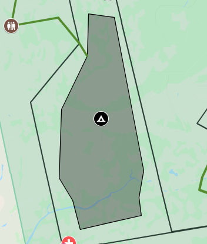 |
Campsite 1: 12.5 km² 150 Campsites Available Max 6 people per site Currently rated 9/10 based on recent reviews Utilities: Sanitary Disposal Station First Aid Parking Restrooms Drinking Water Emergency Telephone Recycling |
| 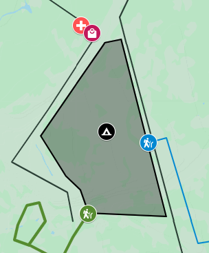 |
Campsite 2: 9.38 km² 75 Campsites Available Max 5 people per site Currently rated 8.7/10 based on recent reviews Utilities: Sanitary Disposal Station First Aid Parking Restrooms Drinking Water Emergency Telephone Recycling Wheelchair Accessible |
| 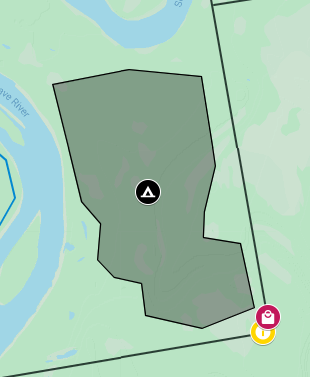 |
Campsite 3: 11.1 km² 90 Campsites Available Max 6 people per site Currently rated 4.5/10 based on recent reviews Utilities: Sanitary Disposal Station First Aid Parking Restrooms Drinking Water Emergency Telephone Recycling Wheelchair Accessible |
| 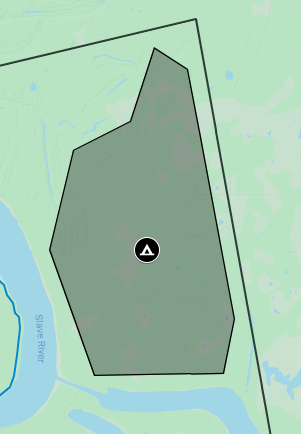 |
Campsite 4: 13.9 km² 150 Campsites Available Max 4 people per site Currently rated 9.8/10 based on recent reviews Utilities: Sanitary Disposal Station First Aid Parking Restrooms Drinking Water Emergency Telephone Recycling Showers Wifi Electrical Service |
| 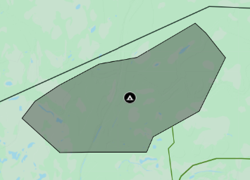 |
Campsite 5: 22.7 km² 200 Campsites Available Max 8 people per site Currently rated 5.4/10 based on recent reviews Good for those who want to try 'no waste' camping Utilities: First Aid Parking Restrooms Drinking Water Emergency Telephone |
| Site | Cost per Night (As of 04/03/19) | Opening and Closing Dates | Availability (As of 04/03/19) |
|---|---|---|---|
| Campsite 1 | $87 | April 16, 2019 to October 24, 2019 | 56% Booked |
| Campsite 2 | $84 | Mar 23, 2019 to November 7, 2019 | 88% Booked |
| Campsite 3 | $73 | April 1, 2019 to October 4, 2019 | 36% Booked |
| Campsite 4 | $93 | April 6, 2019 to October 28, 2019 | 93% Booked |
| Campsite 5 | $68 | Mar 23, 2019 to September 13, 2019 | 14% Booked |
Calling all adventurers! If you qualify as one, campsite 6 is for you. Its rugged terrain makes camping on the slant of a hill or even dangling from treetops possible! This campsite provides even campers with the highest level of experience a challenge.
Campsite 6 is a special campsite. Nestled in rugged terrain, it is for campers who have a high level of experience with camping. Those who are inexperienced are recommended to bring someone experienced, but all are welcome. The table below (May need to scroll down a bit) shows the information for this campsite, the RV park, the Park Lodge and the Boathouse Site.
The RV park is great if you just want to relax, but don't want to spend too much time cooking outside, setting up a tent, and having a hard time when there is rain. Our RV park offers enjoyment for those who are craving an escape but not too full of exploration.
For people who want to take relaxation to a whole new level, the Park Lodge is a good option for you. Each lodge is equipped with a working fireplace and washroom, to ensure you can stay warm and clean. Enjoy the bonfire at the center of the Park Lodge area at night, participate in activities that run all day, or just take a nap in your lodge.
The Boathouse Site is one of our most popular attractions. Spend a day camping, on water! Our boathouses are fully equipped with a washroom system, beds, and basically anything you would find in a simple house. Remember you have to canoe there. Enjoy your time out at the lake, and even try to catch some fish, but just remember to not get seasick!
| Area | Brief Description |
|---|---|
| 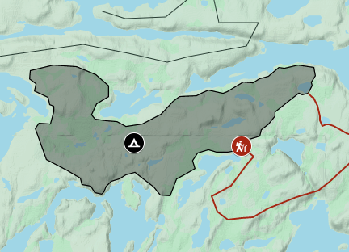 |
Campsite 6: 9.6 km² 45 Campsites Available Max 2 people per site Currently rated 6.8/10 based on recent reviews Utilities First Aid Parking Restrooms Drinking Water Emergency Telephone Recycling |
| 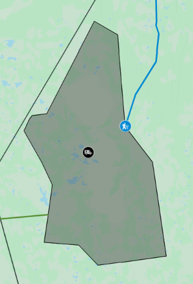 |
RV Park: 32.3 km² 75 Campsites Available Max people per site based on RV size. (RV must fit in the site) Currently rated 7.9/10 based on recent reviews Utilities First Aid Parking Restrooms Drinking Water Emergency Telephone Electrical Service Litter Receptacle |
| 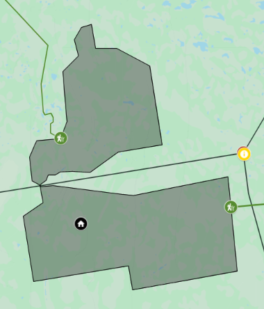 |
Park Lodge: 36.9 km² 50 Campsites Available Max 5 people per site Currently rated 8.2/10 based on recent reviews Utilities First Aid Parking Restrooms Drinking Water Emergency Telephone Electrical Service Litter Receptacle Campfire |
| 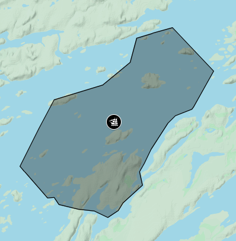 |
Boathouse Site: 17.4 km² 25 Boathouses Available Max 4 people per site Currently rated 9.3/10 based on recent reviews Utilities Marina First Aid Parking Restrooms Drinking Water Emergency Telephone Showers |
| Site | Cost per Night (As of 04/03/19) | Opening and Closing Dates | Availability (As of 04/03/19) |
|---|---|---|---|
| Campsite 6 | $89 | April 10, 2019 to September 31, 2019 | 4% Booked |
| Park Lodge | $125 | All Year | 80% Booked |
| RV Park | $99 | February 3 to September 9, 2019 | 50% Booked |
| Boathouse Site | $130 | May 4, 2019 to August 31, 2019 | 100% Booked |
To book campsites, click here
Experience treetop trekking at our park for those who want a thriller, but also want to stay safe. A perfect way to step outside of your comfort zone.
More information located at the visitor’s center, information centers and the location of this activity.
Our roads are extremely long, covering a distance of about 510 kilometers. The roads are for you to enjoy driving through, day and night.
More information located at the visitor’s center and information centers.
The normal campsites for those who want a safe and fun experience. Perfect for family fun or individual recreation.
For those who want a challenge from traditional camping, Camping on the edge of slanted rocks would be perfect for and adventurer of any type.
Perfect for those who love a luxury lifestyle but want a chance to get our into the open. The park lodge promises a warm place to stay and enjoy.
If you don’t want to leave your vehicle, but want to enjoy a camping experience, then you should try taking a trip to our RV park.
Ever imagined what it felt like to camp on water, or even live on a boat. If you want to satisfy both of these experiences, you should come out in the waters and feel what it's like to live on a movable house.
More information located at the visitor’s center, information centers, the location of this activity and the Campgrounds tab.
Fun for all ages, just the water can sometimes be a bit cold. Otherwise, you can enjoy the scenery around you as you row and observe clear waters.
Go alone or go as a group, and explore the northwest waters for yourself.
Exclusive for travellers only in the summer, Try this combination of canoeing and surfing, while you look at the fish swimming below your board.
Our tours to the Northern Islands of our park can be reached by taking a 10-minute boat ride. Enjoy the breeze while it lasts.
With the abundance of fish, you could come to our park and try to catch some yourself. The spring is the best season if you want to catch some trout, and the summer is great if you want to catch some smallmouth bass. Have freshly caught dinner at your campsite. Just remember fishing regulations, and how much to catch.
More information located at the visitor’s center, information centers, and the location of this activity.
Take a day’s time to explore each of the 16 trails of various difficulty (5 easy, 5 medium, and 6 difficult), and even encounter some animals there, but remember, safety is the first priority.
More information located at the visitor’s center, information centers, the location of this activity, and the map.
Learn about the remains of a once thriving village and visit this well preserved archeological site. The area is yours to explore, with a video that plays repeatedly every 30 minutes in one of our buildings.
More information located at the visitor’s center, information centers, the location of this activity, and the History tab.
We have a lot of cool facts and awesome features. Continue below to learn more about us.
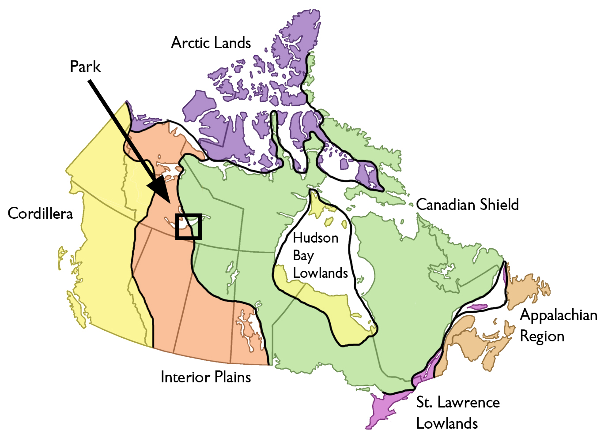
Our land is composed of two very distinct parts. The western half is part of the Interior Plains and have rolling hills and rich soil. They were formed around 1.9 billion years ago and are made of sediments worn down from the Canadian Shield. The eastern half is part of the Canadian Shield which has rugged terrain and little soil.
The Canadian Shield is one of the oldest regions of the world, being formed nearly 4 billion years ago. This region used to have high mountains but millions of years of erosion have worn them down to the rolling hills they have now. The last ice age had glaciers that, when the planet began to warm up again, retreated and scraped the soil off, leaving the rocky look today.
The Interior Plains used to be shallow seas with aquatic life. The seas housed many marine animals and coral reefs. When the ground under the sea rose, the coral reefs died and left behind fossil fuels and fertile soil from the dead marine animals. The land is now used for farming and extraction.
Our land is on the Canadian boreal and taiga forest, with its coniferous trees and cold weather. The treeline is
still further north than us meaning that our trees can still survive, though with some special
adaptations.

In the western part of Great Slave Lake, lake whitefish are abundant as they avoid the deeper areas of the eastern part. In the eastern part, lake trout and grayling can be seen. Near the southern shore, you can find goldeye, white suckers, and walleye.
The Great Slave Lake is part of the Canadian boreal and taiga forest. This means that there are many birds and mammals adapted to the cold. The boreal forest contains moose, caribou, grizzly and black bears, wolves, kingfishers, bobcats, owls, and chickadees. Many of these animals have adapted to the climate of the boreal forest such as gaining white fur, thicker feathers, or better senses to find and catch its prey.
You can hover over the pictures with your mouse to determine the animal or plant
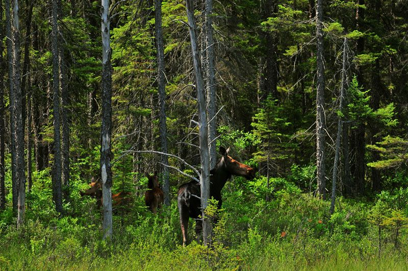
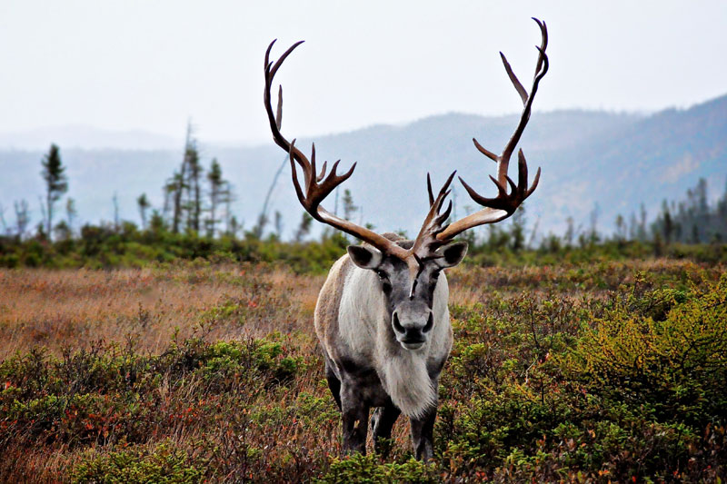
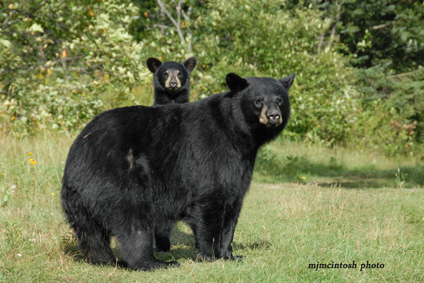
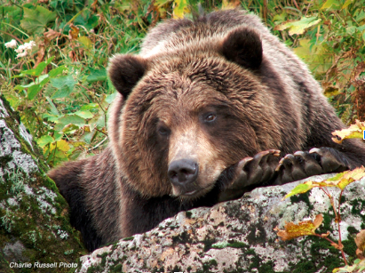
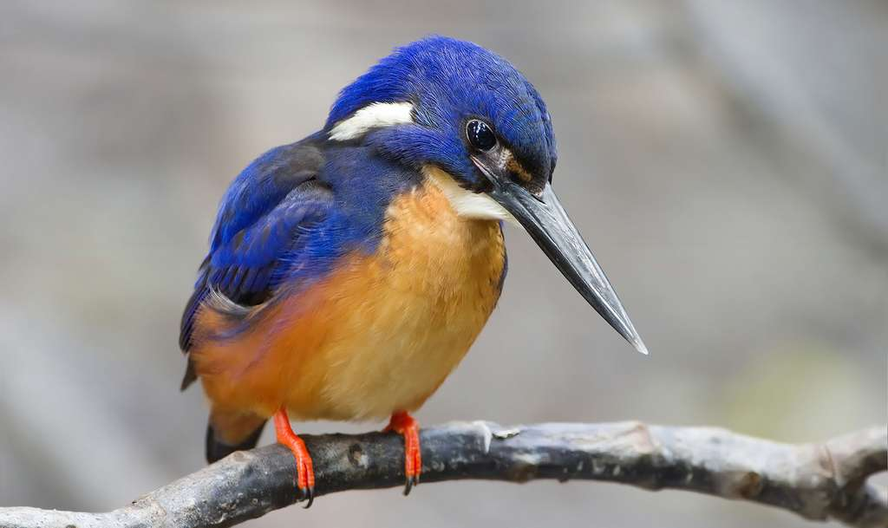

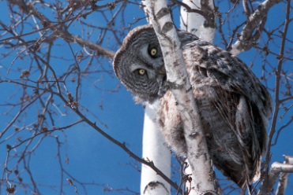
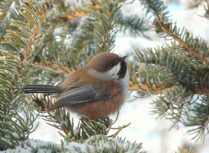
Our land lies south of the treeline, meaning that you can find coniferous forests in us. We are however between
the woodland and tundra climate regions. We have jack pine and spruce near the lake in thick forests.
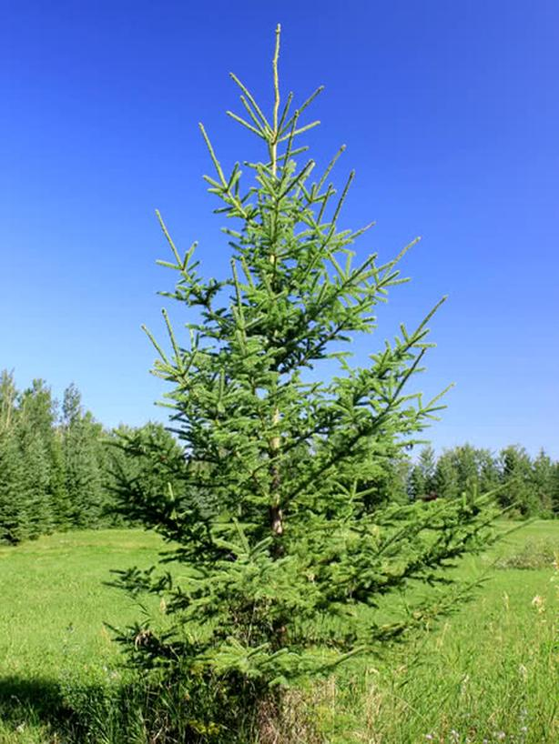
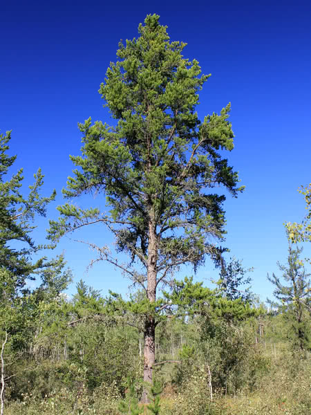
Near the mouth of the Rocher River, there lie the ruins of an abandoned town over 200 years old. The Rocher River community, probably one of the first European settlements, had over 200 people, but they have been forced away by the school's destruction by fire in 1960, the closing of the Hudson's Bay Company's post, and the burning down of the Ed and Rose Demelt's store. The construction of the Taltson River dam upstream from the community further increased the need to leave, as the community was dependent on hunting and trapping to live. After the dam was built, the community which once thrived at Rocher River all left, leaving an abandoned village.
The former residents of the Rocher River found themselves in a new place. Some got a job, some joined other first nations tribes, and some even found a good home. However, there were those who were not so lucky. The unfortunate individuals found themselves turning to alcoholism and ending up dying on the streets of Yellowknife.
Some of the once inhabitants of Rocher River still return to their seasonal cabins where the former town was.
The Great Slave Lake is one of the several large lakes in northern Canada, and they were made from retreating
glaciers that scraped soil away and melted to create the lake we know today. The deepest point of the lake,
Christie Bay (which is not in our park), is 614 meters, carved from the glaciers that one existed. This lake, like
the other large northern lakes, lays on the boundary between the Interior Plains and the Canadian
Shield.

Evidence of civilization living near Great Slave Lake can be traced back to over 5000 BCE, belonging to the people of the Dene, otherwise known as 'Slaveys' who lived on the eastern shore of the lake.
However, in the 18th to the 19th century, as the exploration of Canada started, non-indigenous people (Europeans) Started to visit, and even settle near Great Slave Lake. Trade was developed between the indigenous and the non-indigenous, as the Dene people began to establish their own trading post. As time passes, more trading posts became apparent, including Fort Resolution, after the Hudson Bay Company and the North West Company combined.
You can hover over the image with your mouse for a short caption:
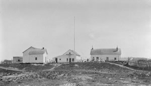
In the late 19th century, social changes to the indigenous people living around Great Slave Lake started. The arrival of Christian missionaries set down the establishment of 3 residential schools near Great Slave Lake. The first one in Fort Providence, The Second one in Hay River and The final one in Fort Resolution.
You can hover over the image with your mouse for a short caption:
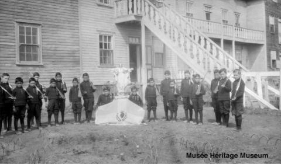
The First Nations near the trading posts started to complain, and there were disputes between them and other tribes and also with the Europeans, and some First Nations made complaints about their rights to fishing taken away. The Europeans decided that it was best to just offer them a one time payment to settle their legal claims with the government.
The discovery of gold in 1934 set off a chain of events in the North side of the lake, causing a gold rush. A company, Consolidated Mining and Smelting opened Con Mine in 1938, and was joined with another one, Great Mine in 1948 after World War II. Later, a zinc mine was opened on the south shore of Great Slave Lake, and a town was built and later abandoned after the closure of the zinc mine in 1988, Con Mine in 2003 and Great Mine the year following.
Additionally, the post war period brought many fishers to Great Slave Lake, and with an analysis done by biologists, the lake was found to be blooming with fish, and this would be a great opportunity for the harvesting of fish. As a result, the government established fisheries near the shores of Great Slave Lake, where both indigenous and non-indigenous people would often come and fish.
We are cleaning up the arsenic in and around the park and lake. The arsenic trioxide was produced in the Giant Mine that produced gold. The mine has since closed but the arsenic is still floating around. An enormous 237 000 tons of arsenic dust was stored underground just hundreds of meters from the lake, threatening further contamination. We will collaborate with the ongoing cleanup from the government.
You can help us by not throwing trash into the lake and not drinking the lake water. Please do not feed wild animals as they may eat something different. Feeding them unknown foods may shock their systems and could cause injury or death to the animal.
Failure to follow basic park rules will result in warnings, fines and permanent bans from our park. Several basic ones are listed below:
Q: How can I get here?
A: You can get here by taking the Fort Resolution highway and continuing on the extension to the park.
Q: Can I cancel my campsite reservation once I confirmed it?
A: Absolutely. You can cancel anytime. Just go to the booking spreadsheet, go to my campsites, and then click
on the cancel button.
Q: How do I change a campsite?
A: Just go to the booking spreadsheet, go to my campsites, and then click on change. Then choose a new campsite.
Be warned that others may have picked the campsite that you want.
Q: Why doesn't campsite 6 fall under the 'campsites' category?
A: Campsite 6 is a special campsite. Its difficulty level is much higher than the conventional ones (Campsites
1-5). It is because of its difficulty which makes it stand out from the rest so we include it with the others.
Q: Is the drinking water safe, or should I still boil my water?
A: The tap water has been filtered and safe. However, we strongly recommend that you still boil your drinking
water as other bacteria may have found their way into the water after our filtration but before usage.
Q: Do I have to purchase firewood?
A: Yes, you are not allowed to use wood from our park or bring your own firewood, mainly because the preservation
of our park is very important to us and you are not allowed to bring your own for the risk of invasive species.
Q: If I booked a spot in the lodge or the boathouses, what should I bring?
A: At the bare minimum, you should bring a small propane stove (With gas), a sleeping bag, some food (with a
cooler), some clothes, and toiletries. Washrooms and empty bunks at the lodge and the boathouses are supplied.
Q: Is it safe to swim in the lake?
A: If you want to, you can. However, keep in mind that some areas of the lake has moderate levels of arsenic, so exercise
caution when there are toddlers playing around. Do not encourage them to drink the lake water or eat the dirt or mud.
Eleni Stanton
"This park was amazing. Wonderful scenery, beautiful blue lakes. I booked campsite 4. electricity, clean water,
clean showers, pretty much anyone could ask for. Maybe it's too luxurious. A place like this to have wifi, but
overall this park is amazing."
★★★★★★★★☆☆
Reon Wagstaff
"Consider myself lucky. I was fortunate enough to get a spot at the boathouses. Wow, I was amazed. The waters
were so clear the time I stayed there. It was incredible yet scary. Now here is a bit of advice. Don't I mean
DON'T TRY TO SWIM. It freezing in the middle of August. You could possibly die if you fall in with nobody to
help you. That what the railings are for."
★★★★★★★☆☆☆
Dione Monagham
"This park is amazing. I booked campsite one, and I was able to enjoy every single one of the trails, did
encounter a friendly bear."
★★★★★★★★★★
Stephan Hanton
"I booked 5 cuz it wuz cheap af, y'know but once i got there. Yoo lowkey this campsite is so sketch man. Can't
get a spot. Legit everyone gonna look at u like you got a prob with them or somethin. Oh ye the drinking water
is hella weird like this park got no sanitation or smth. tf m8 my 59 dolls gonnne now."
★★☆☆☆☆☆☆☆☆
Oscar Tim
"The park was good, not as bad as the other one's I've been to before. Like the place has good stuff such as the
trails, good showers, and yeah. Something I'd've wanted to know beforehand that the campsites were full of
people, but other than that the place is great."
★★★★★★★★☆☆
Mopa Doblons
"I booked campsite 6. I thought I was good with all my skills, but don't underestimate this campsite. While I as
camping slanted, a jagged rock ripped my tent and I rolled down like maybe 10 meters. To whoever is reading
this, be careful and be prepared. Get good gear. The campsite shops got it all. Otherwise, a great place to
spend if you don't break your arm."
★★★★★★☆☆☆☆
Linas Heamtoaster
"Very fun. Created a dope website about it using campsite 4's wifi."
★★★★★★★★★☆
Yowitza Altoberet
"Went for an 8 day medley. Each day I would cycle to each of the different campsites. They were all good, and
being sort of a litterer, I did get shouted ad by some old guy from camp 5, but that's fine. This park is
sick!"
★★★★★★★★★★
Alberto Hsing
"The whole park thing was pretty good. I went on their website and it looked pretty professional, especially for
a new one. The fact that the webpage actually resembles and feels like the actual park is something I wouldn't
have expected. Pretty happy that I booked early to check it out. The staff there were really nice and were
extremely helpful. I nearly walked off into the outhouse thinking it was a smaller cabin and a passing worker
called out to me to stop. Would come here next year for sure."
★★★★★★★★★☆